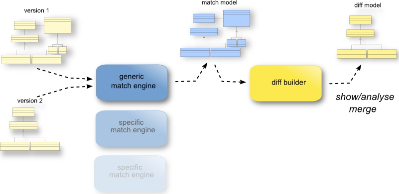
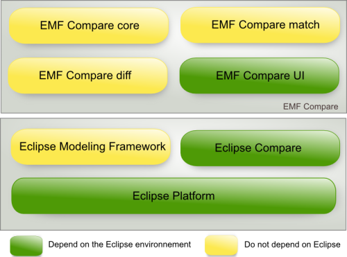
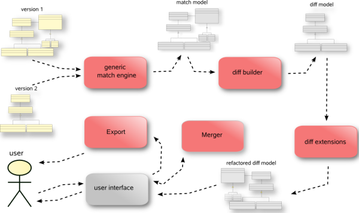

Authors Cédric Brun Contact cedric.brun@obeo.fr
Copyright 2007-2010, Obeo ©
The comparison process is divided in 2 phases : matching and differencing. The matching phase browses both models trying to figure out which element of model
1 corresponds to which element of model 2. The differencing process then browses the result of the matching and creates the corresponding delta. The result of
both phases can be serialized as models.

Here is the plugin architecture of the EMF Compare component :

The red boxes in the following picture represent the component which were designed for extensibility. On all of these components can be plugged your own engines
or behavior.
